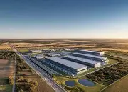
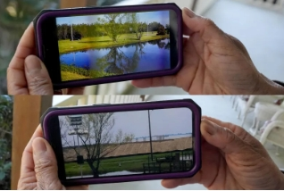
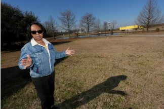
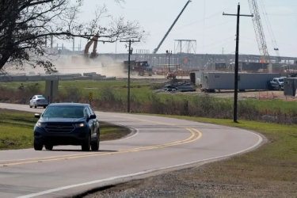
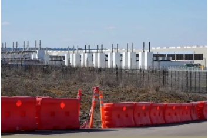
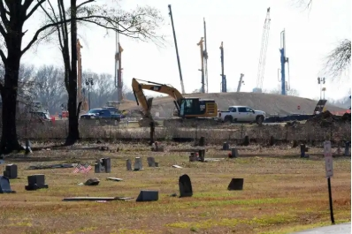
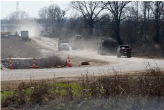
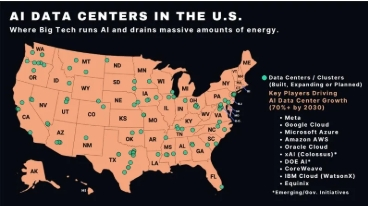

Twenty-four miles outside of Jackson, Mississippi lies a small historic town named Canton whose tight-knit Southern community is actively being threatened by corporation giants like Amazon. Residents were not informed that a thousand-acre data center would be build practically in their backyards-they had to figure it out for themselves; and even when what was really going on came to light, it was too late. Amazon's false promises of increased job opportunities and economic prosperity are not being reflected according to residents who miss their peaceful, quiet town that they now consider "a mess." Backyards that were once green and prosperous are now mourned by their residents, who only have construction and smog to look at now.


Pictured here is the before-and-after of a resident's backyard. A once-beautiful pond surrounded by trees is reduced to a flat, bleak atmosphere where trees are replaced by construction and dirt. The resident we see above is Rene Johnson who laments how the round-the-clock contruction has also affected the quality of her backyard and living space, as the Highway 22 that runs adjacent to her home is now overcrowded and clustered with the noise of traffic and construction.




As we see from the documented photos above, the data center's destruction has touched nearly every part of the surrounding community, not even sparing the graveyard where resident's loved ones are laid to rest. We can see in real-time the accumulating dust caused by large trucks, and how what once would have been a peaceful drive to work, surrounded by nature, now has construction at every corner, making the influence of the center inescapable. One can wonder if this intrusion of all aspects of life could be intentional-as a way of breaking down residents so quickly and severely that they don't know what's hit them until it's too late.

Pictured above is the map of the sprawling data centers that have been built, not counting the ones that are currently in progress. We can see that there are several already clustered in Mississippi, where two in middle of the state are practically overlapping. Besides a row of them in Northern Oregon, the majority of completed data centers are in the Eastern side of the United States, more specifically Southeastern region, which is the region with the largest population of Black communities.